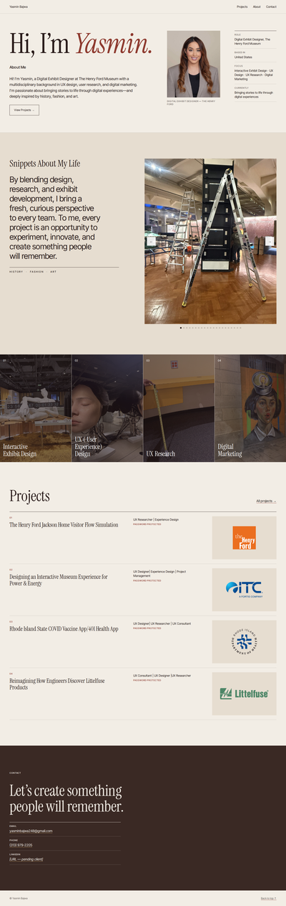

Her colours, from her photographs
Every colour on the site is sampled from the pictures Yasmin chose to show herself: gallery walls, museum wood, and the one strong colour that keeps coming back in her photos, an oxblood red. The site and her images become one thing.
Where each colour comes from


↓ the palette
Linen
#F2EDE5Page ground: gallery wallsSand
#E6DDD0Snippets, Reflection, logo tilesEspresso
#2A1C1BAll text: dark woodWalnut
#3A2924The one dark band: ContactOxblood
#8E3A2FAccent: “Yasmin.”, numbers, links, EnterBrass
#C9A46ALink underline on walnut onlyThe business-card colours (orange, olive, light blue) barely appear in her photos, which is why they never felt connected. Her oxblood is close to the wine already in your Figma file: that instinct was right.
The homepage in these colours
